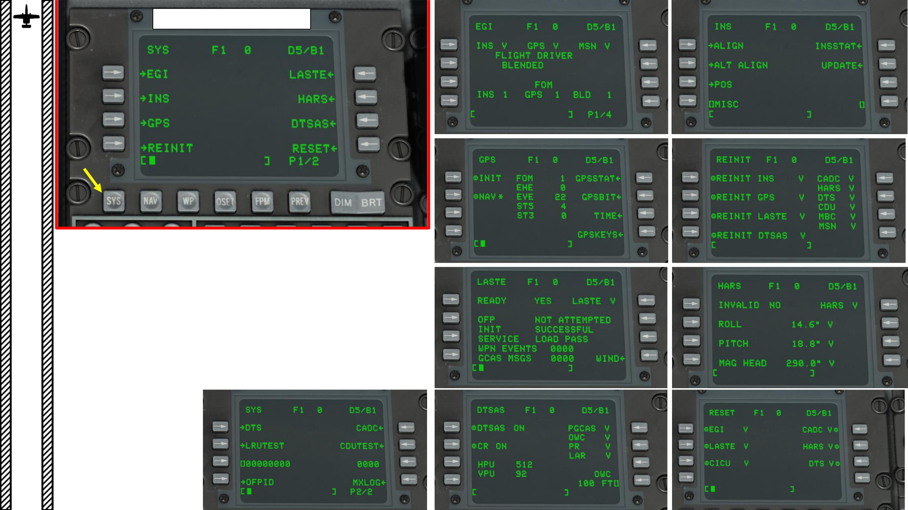

<div id="pf1d" class="pf w0 h0" data-page-no="1d"><div class="pc pc1d w0 h0"><div class="c x0 y0 w1 h0"><div class="t m0 x10 h1 y1 ff1 fs0 fc0 sc0 ls2 ws0">29</div><div class="t m1 x8 h9 y36 ff8 fs7 fc1 sc0 ls0 ws0">PART 3 </div><div class="t m1 x8 h9 y48 ff9 fs7 fc1 sc0 ls0 ws0">–<span class="_ _13"> </span><span class="ff8">COCKPIT &amp; GAUGES</span></div><div class="t m1 x9 ha y38 ff8 fs0 fc1 sc0 ls0 ws0">A-10C </div><div class="t m1 xa hb y38 ff8 fs5 fc1 sc0 ls0 ws0">WARTHOG</div><div class="t m0 x58 h8 y100 ff7 fs0 fc1 sc0 ls0 ws0">S<span class="_ _0"></span>YS (S<span class="_ _0"></span>ystem<span class="_ _0"></span>) Menu (Pag<span class="_ _0"></span>e 1/2<span class="_ _2"></span>)</div><div class="t m0 x14 h1f y101 ff7 fsc fc4 sc0 ls0 ws0">LASTE Sub-Page</div><div class="t m0 x59 h1f y102 ff7 fsc fc4 sc0 ls0 ws0">HARS Sub-Page</div><div class="t m0 x5a h1f y103 ff7 fsc fc4 sc0 ls0 ws0">GPS Sub-Page</div><div class="t m0 x5b h1f y104 ff7 fsc fc4 sc0 ls0 ws0">REINIT <span class="_ _0"></span>Sub-Page</div><div class="t m0 x5c h1f y105 ff7 fsc fc4 sc0 ls0 ws0">INS Sub-Page</div><div class="t m0 x5d h1f y106 ff7 fsc fc4 sc0 ls0 ws0">EGI Sub-Page</div><div class="t m0 x5d h1f y107 ff7 fsc fc4 sc0 ls0 ws0">DTSAS Sub-Page<span class="_ _28"> </span>RESET Sub-Page</div><div class="t m0 x5e h1f y108 ff7 fsc fc4 sc0 ls0 ws0">SYS Sub-Page</div></div></div><div class="pi" data-data='{"ctm":[1.000000,0.000000,0.000000,1.000000,0.000000,0.000000]}'></div></div>
